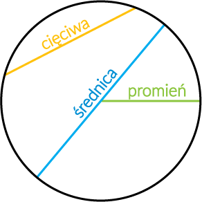
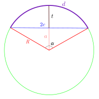

Okrąg o środku S i promieniu r to zbiór punktów płaszczyzny, których odległość od punktu S jest równe dodatniej r
Jego pole możemy obliczeć przez wzór: πr2
Kalkulator pola okręgu:
Wprowadź promień twojego okręgu:
Koło - jest ono o środku S i promieniu r, lecz w przeciwieństwie do koła jest to zbiór płaszczyzny, których odległości od punktu S są mniejsze lub też równe liczbie dodatniej r

Cięciwa - jest to odcinek, który łączy dwa różne punkty okręgu
